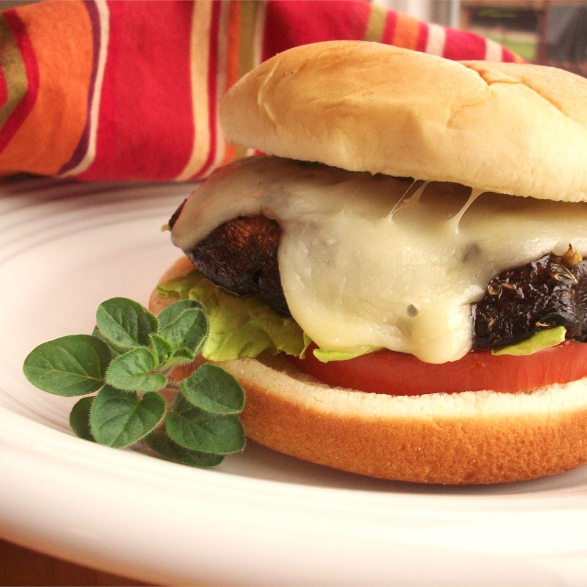

Portobello Mushroom Burgers

Description
A delicious burger made with amazing mushrooms. Tired of beef burgers? Well this is a perfect alternative. It goes great on buns with lettuce, tomato, and aioli sauce.
Ingredients
- 4 portobello mushroom caps
- ¼ cup balsamic vinegar
- 2 tablespoons olive oil
- 1 tablespoon minced garlic
- 1 teaspoon dried basil
- 1 teaspoon dried oregano
- salt and pepper to taste
- 4 (1 ounce) slices provolone cheese
Steps
- Place mushroom caps, smooth side up, in a shallow dish.
- Whisk together balsamic, oil, garlic, basil, and oregano in a small bowl. Season with salt and pepper.
- Pour vinaigrette over mushrooms. Let stand at room temperature for 15 minutes or so, turning twice.
- Preheat grill for medium-high heat.
- Brush grill grates with oil. Place mushrooms on grill, reserving marinade for basting. Grill until just tender, 5 to 8 minutes per side, brushing with marinade frequently.
- Top mushrooms with cheese and continue grilling until cheese is melted, about 2 minutes.